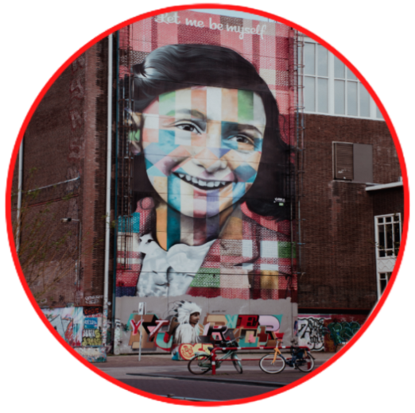

Today's challenge:
Today we challenge you to meet Anne Frank.
Annelies Marie "Anne" Frank was a German-born Jewish girl who kept a diary in which she documented life in hiding under Nazi persecution. She is a celebrated diarist who described everyday life from her family hiding place in an Amsterdam attic. One of the most-discussed Jewish victims of the Holocaust, she gained fame posthumously with the 1947 publication of The Diary of a Young Girl, in which she documents her life in hiding from 1942 to 1944, during the German occupation of the Netherlands in World War II. It is one of the world's best-known books and has been the basis for several plays and films.